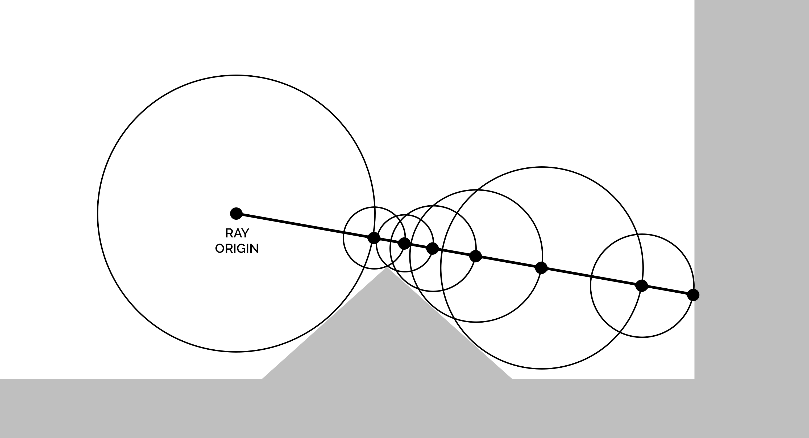
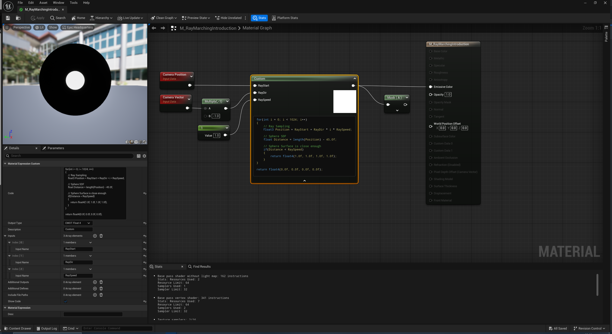
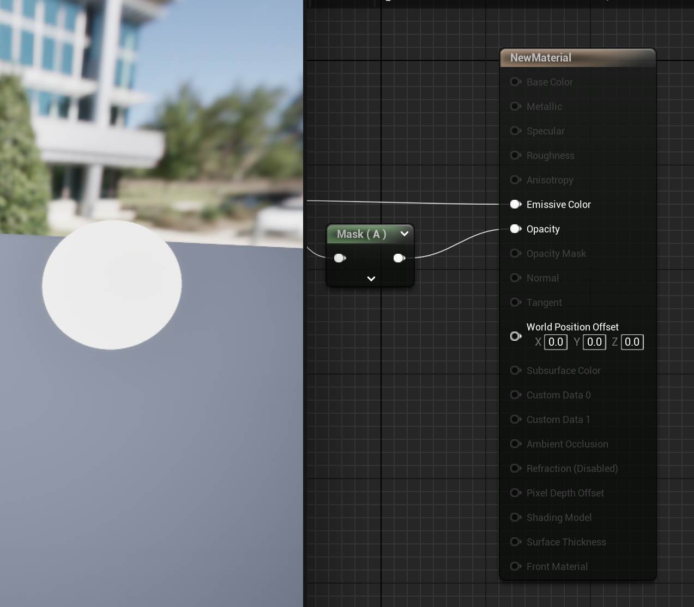
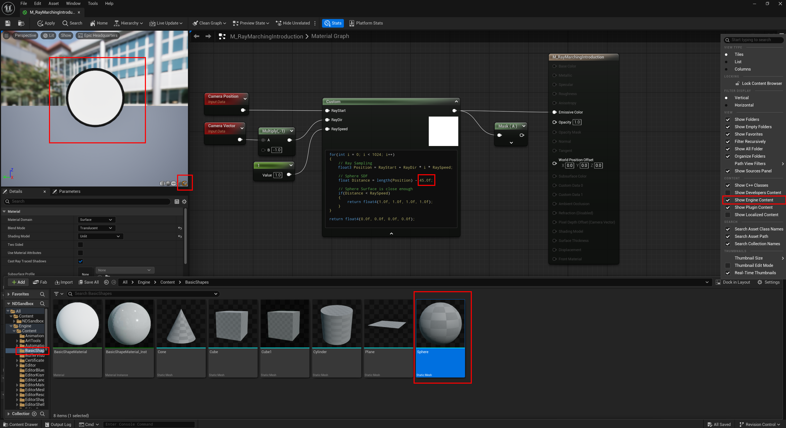
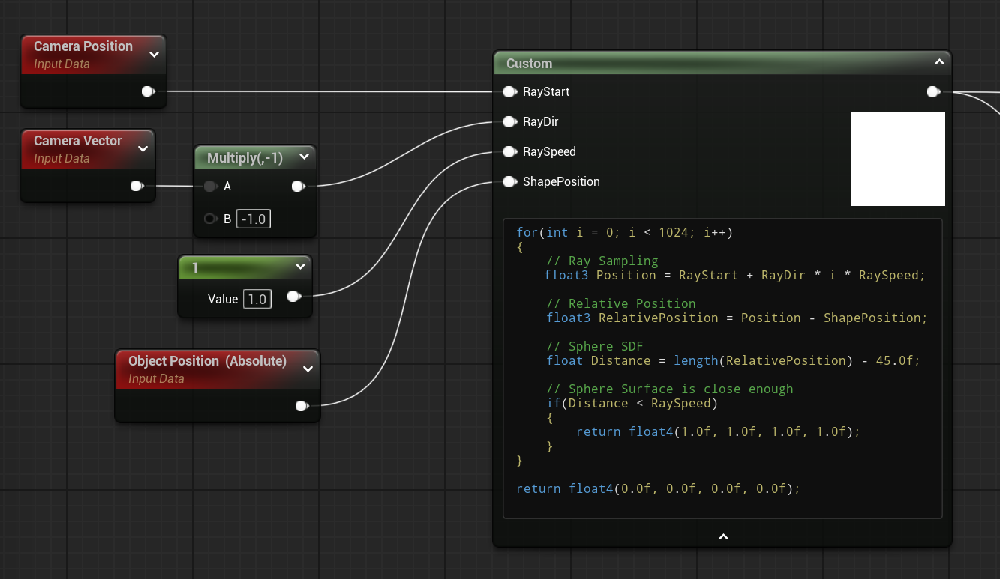

Author: Nelson Defoulny
Category: Tutorials
Unreal Engine Version: 5.5
UE Ray Marching Introduction

Animation by Inigo Quilez via Shadertoy
Licensed under MIT License.

Animation by Frank Hugenroth via Shadertoy
Licensed under CC BY-NC-SA 3.0.


Animation by Dave Hoskins via Shadertoy
What Is Ray Marching
Ray marching is a group of 3D rendering technics where rays are sampled iteratively segment by segment, computing some function at each step.
Use Cases
- Voxel Rendering
- Volumetric Rendering
- Fluid Rendering
- Screen Space Reflection
- Screen Space Shadows
- Physics Simulation
- Morphing Shapes
- Geometry Repetition
- Algorithmically defined Scenes
Signed Distance Functions/Fields
Ray marching often takes advantage of SDFs in order to improve sampling or as scene representation.
A signed distance function returns the shortest distance from any point in space to the surface of a shape. The sign indicates whether the point is inside (negative), on (zero), or outside (positive) the shape. Complex shape can be assemble from SDF primitives using simple math function.
A signed distance field is a 3D (or 2D) spatial representation where each point stores the signed distance to the nearest surface. It can be calculated procedurally from signed distance functions or stored in a texture/volume.
In this article SDF refers to signed distance function
SDF can be quite frightening for people who don't like math but fortunately we can use them without diving into the maths. However, for those who want to understand that part, lets detail some examples to see how SDFs are built.
Examples
// p : position
// s : scale
float sdSphere(float3 p, float s)
{
return length(p) - s;
}
// p : position
// b : bounds/extent
float sdBox(float3 p, float3 b)
{
float3 q = abs(p) - b;
return length(max(q, 0.0)) + min(max(q.x, max(q.y, q.z)), 0.0);
}
// d1 : distance1 (sdf1)
// d2 : distance2 (sdf2)
float opUnion(float d1, float d2)
{
return min(d1, d2);
}
Sampling
Rays can be sample in multiple ways depending on the application. The most naïve approach is to sample rays at fixed intervals, which heavily impact performance and precision. The second approach is to use distance aware sampling method that adapt step interval based on the scene being rendered.
Sphere Tracing
Sphere tracing idea is too take advantage of SDFs to evaluate the distance from current sampling point to nearest surface. The next sampling point can be moved by this distance along the ray without missing any surface. When the evaluated distance is bellow a threshold, then the ray is close enough to a surface and the sampling must stop and return evaluated surface color.

Image by Teadrinker, via Wikimedia Commons
Licensed under CC BY-SA 4.0.
{kind=link}
Volumetric
In volumetric ray marching, all sampled point contribute to final color. For example this can be used to render clouds, gaz or liquids.
References
If you want to learn more about ray marching or SDF I highly recommend to check Inigo Quilez work https://iquilezles.org/. On his website you can also found collection of 2D SDFs and 3D SDFs.
As a deeper introduction to Ray Marching you can also check :
- Ray Marching Introduction From SimonDev
- Ray Marching Introduction From Jamie Wong
Unreal Engine Quick Start
The easiest method to start playing with ray marching in Unreal Engine is to use Custom Node in a Material. It can either be a mesh material or a post process material. In order to render a single object mesh material is more flexible and has a lower rendering cost. Switching to post process become interesting if you need to render multiple objects or if you want to render translucent ray marched volume on top of each others.
Let's start by ray marching a simple sdf shape with fixed step sampling.
We need :
- A Material
- A Custom Node with 3 parameters :
- Ray Start Location
- Ray Direction
- Ray Speed / Interval
- Sphere signed distance function
- Ray marching sampling code

The actual mesh (rendered in black) can be hidden using opacity (or opacity mask)

for(int i = 0; i < 1024; i++)
{
// Ray Sampling
float3 Position = RayStart + RayDir * i * RaySpeed;
// Sphere SDF
float Distance = length(Position) - 45.0f;
// Sphere Surface is close enough
if(Distance < RaySpeed)
{
return float4(1.0f, 1.0f, 1.0f, 1.0f);
}
}
return float4(0.0f, 0.0f, 0.0f, 0.0f);
The ray marching renderer is quite simple. We start from the Camera Position and move along the Camera Direction incrementing by a fixed distance (Ray Speed) at each step. Once we are "on" the shape (Distance < Threshold) we return sphere color and opacity, if ray does not touch the shape after a fix number of iteration then we return black/masked color.
Ray Direction
In unreal engine the camera direction is defined from world position to camera. Therefore, it has to be inverted to get a vector that point towards the world. It is also worth noticing that the ray direction vector has to be normalize which is already the case for unreal camera direction vector.
Iteration and Ray Speed
The number of iteration have a huge impact on performances as each pixel run all iteration unless it reach the sdf.
If the camera distance to the shape is greater than NbIteration * RaySpeed then no pixel will be render because the algorithm will reach NbIteration before the ray can reach the shape.
Increasing Ray Speed increase maximum rendering distance but decrease rendering precision and quality. Ray speed is also linked to shape distance threshold because it make no sense to have a threshold smaller that the sampling distance which would implies that the sampling can jump over the test. In this example I used RaySpeed (1.0f) as a threshold for shape detection which means that detail lower than 1cm (unreal engine unit) won't be rendered.
Fixing Scale
The scaling of the sphere seems wrong. I used a radius of 45cm so we would expect the sdf sphere to be almost the same size as the preview mesh but it is not. This is because material preview meshes have a different size than basic shapes used in the scene. It is easier to work on sdf geometry if the containing mesh have a known size.

After swapping the mesh to default sphere shape.
Fixing Position
This first example does not take into account the shape location so the rendered sphere is always at world origin independently of the object location therefore it should render full black/masked unless the object you want to render is at world origin.
There are two ways of moving SDF location. We can modify the SDF directly but this will be impracticable when we will combine multiple SDFs to create complex shapes. As we want the sample relative position to the SDF, a much better approach is to modify the sampled position so it is relative to SDF location rather than the origin.
// we keep the SDF on origin
float SdSphere(float3 Pos, float Radius)
{
return length(Pos) - Radius;
}
// sdf is called using relative position
float Distance = SdSphere(RayPosition - ObjectPosition, 45.0f);
I add Object World Position to the Custom Node and use the relative position to compute the sphere SDF.

Now the sphere should render properly if move the mesh in the scene.
Sphere Tracing
As we saw, using fixed step sampling heavily impact the render distance, precision and the performances. Therefore a much better approach it to use Sphere Tracing. As shown in the first chapter, this technic use an adaptive sampling distance based on the SDF being rendered which have several advantages.
The threshold is not tied anymore to the ray fixed step and can be much more precise.
The ray move through the map really quickly when far away from the SDF therefore reducing the number of iteration required.
float TotalDistance = 0;
float Threshold = 0.01;
for(int i = 0; i < 32; i++)
{
// Ray Sampling
float3 Position = RayStart + RayDir * TotalDistance;
// Relative Position
float3 RelativePosition = Position - ShapePosition;
// Sphere SDF
float Distance = length(RelativePosition) - ShapeScale;
// Sphere Surface is close enough
if(Distance < Threshold)
{
return float4(1.0f, 1.0f, 1.0f, 1.0f);
}
// Adaptive distance for next step
TotalDistance += Distance;
}
return float4(0.0f, 0.0f, 0.0f, 0.0f);
In this implementation I used a total distance that grows adaptively to replace the fixed steps based on iteration index.
It is worth noticing that :
- The number of iteration has decrease significantly.
- The threshold is now really precise.
- The camera distance to the shape is not constrained anymore.